假如只能阅读一章来学习 Git，那么本教程绝对是一个不二的选择。本章内容涵盖你在使用 Git 完成各种工作中将要使用的各种基本命令。 在学习完本章之后，你应该能够配置并初始化一个仓库(repository)、开始或停止跟踪(track)文件、暂存(stage)或提交(commit)更改。 本章也将演示如何配置 Git 来忽略指定的文件和文件模式、如何迅速而简单地撤销错误操作、如何浏览项目的历史版本以及不同提交(commits)间的差异、如何向远程仓库推送(push)以及如何从远程仓库拉取(pull)文件。
远程仓库是什么？
Repository(仓库)包含的内容 - Git的目标是管理一个工程，或者说是一些文件的集合，以跟踪它们的变化。Git使用Repository来存储这些信息。一个仓库主要包含以下内容(也包括其他内容)：
- 许多commit objects
- 到commit objects的指针，叫做heads
- Git的仓库和工程存储在同一个目录下，在一个叫做.git的子目录中。
1.创建Repository(仓库)
在使用Repository(仓库)之前，我们首先需要创建仓库，创建仓库有很多种，这里常见的有如下几种：
- 自己搭建个 Git 服务器，安装如 GitLab 的Git版本管理系统
- 使用第三方托管平台，如国内的 http://git.oschina.net 和国外的 http://github.com/
为了节省时间，这里使用第三方托管平台作为讲解，以 http://git.oschina.net 为例，大概需要通过以下几个步骤完成仓库的创建。
- 注册网站账号
- 登录帐后，创建仓库
第一步：注册网站的帐号
打开网址： http://git.oschina.net/signup ，写入一些必填项，然后提交，如下图所示 -
提交完成后，登录帐号还不能使用，还需要登录注册的邮箱验证帐号。验证邮箱验证帐号后，登录后默认的用户面板界面如下所示 -
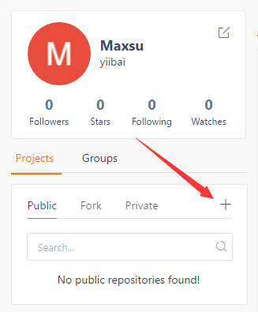
点击红色箭头指向的”+“号，以创建一个仓库，如下所示 -
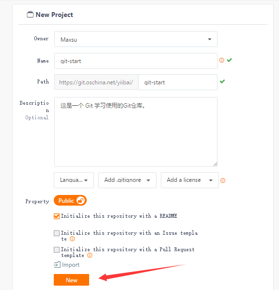
这样，一个公开的仓库就创建完成了。要记住上面图片创建的路径：http://git.oschina.net/yiibai/git-start.git
2.获取 Git 仓库
有两种取得 Git 项目仓库的方法。第一种是从一个服务器克隆一个现有的 Git 仓库。第二种是在现有项目或目录下导入所有文件到 Git 中；
2.1 克隆现有的仓库
如果你想获得一份已经存在了的 Git 仓库的拷贝，比如说，想为某个开源项目贡献自己的一份力，这时就要用到 git clone 命令。 如果你对其它的 VCS 系统(比如说Subversion)很熟悉，请留心一下这里所使用的命令是”clone“而不是”checkout“。 这是 Git 区别于其它版本控制系统的一个重要特性，Git 克隆的是该 Git 仓库服务器上的几乎所有数据，而不是仅仅复制完成你的工作所需要文件。 当你执行 git clone 命令的时候，默认配置下远程 Git 仓库中的每一个文件的每一个版本都将被拉取下来。如果服务器的磁盘坏掉了，通常可以使用任何一个克隆下来的用户端来重建服务器上的仓库。
在安装了Git 的 Windows系统上，在一个目录(本示例是：F:\worksp)中，单击右键，在弹出的菜单中选择“Git Bash”，如下图中所示 -
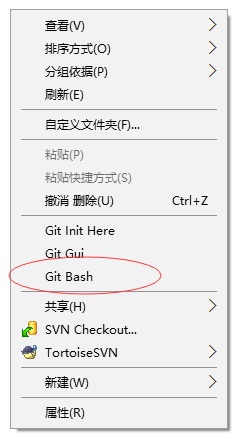
克隆仓库的命令格式是 git clone [url] 。 比如，要克隆 Git 的上面创建的仓库 git-start.git，可以用下面的命令：
$ git clone http://git.oschina.net/yiibai/git-start.git
这会在当前目录下创建一个名为 “git-start.git” 的目录，并在这个目录下初始化一个 .git 文件夹，从远程仓库拉取下所有数据放入 .git 文件夹，然后从中读取最新版本的文件的拷贝。上面命令执行后，输出结果如下所示 -
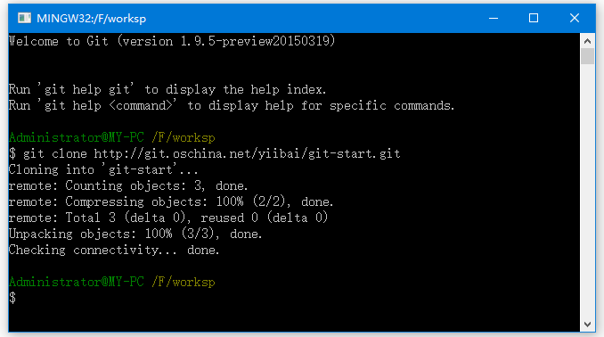
如果想在克隆远程仓库的时候，自定义本地仓库的名字，可以使用如下命令：
$ git clone http://git.oschina.net/yiibai/git-start.git mygit-start
这将执行与上一个命令相同的操作，不过在本地创建的仓库名字变为 mygit-start。
Git 支持多种数据传输协议。 上面的例子使用的是 http:// 协议，不过也可以使用 git:// 协议或者使用 SSH 传输协议，比如 user@server_ip-or-host:path/to/repo.git 。在服务器上搭建 Git 将会介绍所有这些协议在服务器端如何配置使用，以及各种方式之间的利弊。
2.2. 在现有目录中初始化仓库
如果不克隆现有的仓库，而是打算使用 Git 来对现有的项目进行管理。假设有一个项目的目录是：D:\worksp\git_sample，只需要进入该项目的目录并输入：
$ git init
执行上面命令，输出结果如下 -
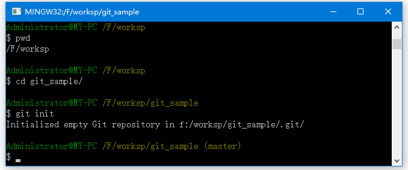
该命令将创建一个名为 .git 的子目录，这个子目录含有初始化的 Git 仓库中所有的必须文件，这些文件是 Git 仓库的骨干。 但是，在这个时候，我们仅仅是做了一个初始化的操作，项目里的文件还没有被跟踪。
如果是在一个已经存在文件的文件夹(而不是空文件夹)中初始化 Git 仓库来进行版本控制的话，应该开始跟踪这些文件并提交。可通过 git add 命令来实现对指定文件的跟踪，然后执行 git commit 提交，假设在目录 F:\worksp\git-start.git 中有一些代码需要跟踪(版本控制)，比如有一个 Python 代码文件叫作：hello.py 内容如下：
#!/usr/bin/python3
#coding=utf-8
print ("This is my first Python Programming.")
可通过 git add 命令来实现对hello.py 文件的跟踪 -
$ git add hello.py
$ git commit -m 'initial project version'
上面命令执行结果如下 -
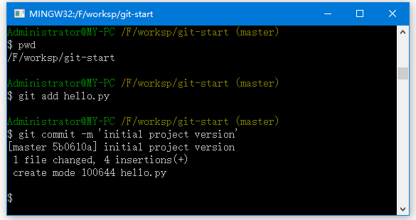
在之后的章节中，再逐一解释每一条指令的意思。 现在，你已经得到了一个实际维护(或者说是跟踪)着若干个文件的 Git 仓库。
3. 更新提交到仓库
3.1 记录每次更新到仓库
现在我们手上有了一个真实项目的 Git 仓库(如上面 clone 下来的 git-start.git)，并从这个仓库中取出了所有文件的工作拷贝。 接下来，对这些文件做些修改，在完成了一个阶段的目标之后，提交本次更新到仓库。
工作目录下的每一个文件都不外乎这两种状态：已跟踪或未跟踪。 已跟踪的文件是指那些被纳入了版本控制的文件，在上一次快照中有它们的记录，在工作一段时间后，它们的状态可能处于未修改，已修改或已放入暂存区。 工作目录中除已跟踪文件以外的所有其它文件都属于未跟踪文件，它们既不存在于上次快照的记录中，也没有放入暂存区。 初次克隆某个仓库的时候，工作目录中的所有文件都属于已跟踪文件，并处于未修改状态。
编辑过某些文件之后，由于自上次提交后你对它们做了修改，Git 将它们标记为已修改文件。 我们逐步将这些修改过的文件放入暂存区，然后提交所有暂存了的修改，如此反复。所以使用 Git 时文件的生命周期如下：

3.2 检查当前文件状态
要查看哪些文件处于什么状态，可以用 git status 命令。 如果在克隆仓库后立即使用此命令，会看到类似这样的输出：
$ git status
上面命令执行结果如下 -
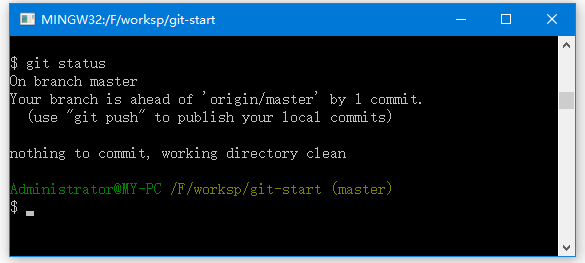
这说明现在你的工作目录相当干净。换句话说，所有已跟踪文件在上次提交后都未被更改过。 此外，上面的信息还表明，当前目录下没有出现任何处于未跟踪状态的新文件，否则 Git 会在这里列出来。 最后，该命令还显示了当前所在分支，并告诉你这个分支同远程服务器上对应的分支没有偏离。现在，分支名是 “master”, 这是默认的分支名。
现在，在项目下创建一个新的 mytext.txt 文件。 如果之前并不存在这个文件，使用 git status 命令，将看到一个新的未跟踪文件：
# 向 mytext.md 文件写入一点内容
$ echo 'This is my first Git control file ' > mytext.txt
$ git status
On branch master
Untracked files:
(use "git add <file>..." to include in what will be committed)
mytext.txt
nothing added to commit but untracked files present (use "git add" to track)
上面命令执行结果如下 -
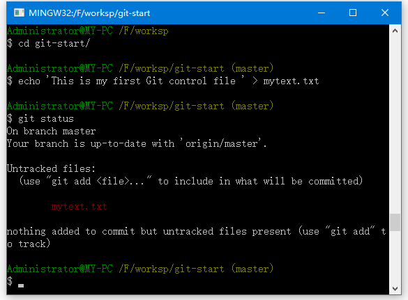
在状态报告中可以看到新建的 README 文件出现在 Untracked files 下面。 未跟踪的文件意味着 Git 在之前的快照(提交)中没有这些文件；Git 不会自动将之纳入跟踪范围，除非你明明白白地告诉它“我需要跟踪该文件”， 这样的处理让你不必担心将生成的二进制文件或其它不想被跟踪的文件包含进来。 不过现在的例子中，我们确实想要跟踪管理 README 这个文件。
3.3 跟踪新文件
使用命令 git add 开始跟踪一个文件。 所以，要跟踪 mytext.txt 文件，运行：
$ git add mytext.txt
此时再运行 git status 命令，会看到 mytext.txt 文件已被跟踪，并处于暂存状态：
$ git status
On branch master
Changes to be committed:
(use "git reset HEAD <file>..." to unstage)
new file: mytext.txt
上面命令执行结果如下 -
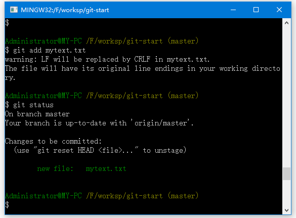
只要在 Changes to be committed 这行下面的，就说明是已暂存状态。 如果此时提交，那么该文件此时此刻的版本将被留存在历史记录中。git add 命令使用文件或目录的路径作为参数；如果参数是目录的路径，该命令将递归地跟踪该目录下的所有文件。
3.4 暂存已修改文件
现在我们来修改一个已被跟踪的文件。 如果修改了一个名为 README.md 的已被跟踪的文件，打开文件 README.md并编辑其中的内容，在文件的未尾加入一行内容：”这是暂存已修改文件示例”，然后运行 git status 命令，会看到下面内容：
$ git status
On branch master
Changes to be committed:
(use "git reset HEAD <file>..." to unstage)
new file: mytext.txt
Changes not staged for commit:
(use "git add <file>..." to update what will be committed)
(use "git checkout -- <file>..." to discard changes in working directory)
modified: README.md
执行上面命令得到以下结果 -
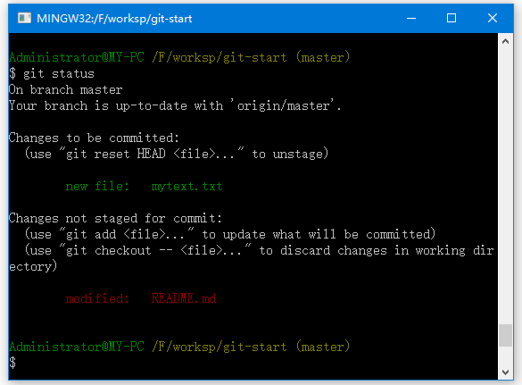
文件 README.md 出现在 Changes not staged for commit 这行下面，说明已跟踪文件的内容发生了变化，但还没有放到暂存区。要暂存这次更新，需要运行 git add 命令。 这是个多功能命令：可以用它开始跟踪新文件，或者把已跟踪的文件放到暂存区，还能用于合并时把有冲突的文件标记为已解决状态等。 将这个命令理解为“添加内容到下一次提交中”而不是“将一个文件添加到项目中”要更加合适。 现在让我们运行 git add 将”README.md“放到暂存区，然后再看看 git status 的输出：
$ git add README.md
Administrator@MY-PC /F/worksp/git-start (master)
$ git status
On branch master
Your branch is up-to-date with 'origin/master'.
Changes to be committed:
(use "git reset HEAD <file>..." to unstage)
modified: README.md
new file: mytext.txt
Administrator@MY-PC /F/worksp/git-start (master)
$
现在两个文件都已暂存，下次提交时就会一并记录到仓库。 假设此时，想要在 README.md 里再加条注释， 重新编辑存盘后，准备好提交。不过且慢，先向 “README.md” 文件加入一点内容，再运行 git status ，如下所示 -
$ echo "Add new Line content 1002 " >> README.md
$ git status
On branch master
Changes to be committed:
(use "git reset HEAD <file>..." to unstage)
new file: README
modified: mytext.txt
Changes not staged for commit:
(use "git add <file>..." to update what will be committed)
(use "git checkout -- <file>..." to discard changes in working directory)
modified: README.md
执行上面命令，输出结果如下所示 -
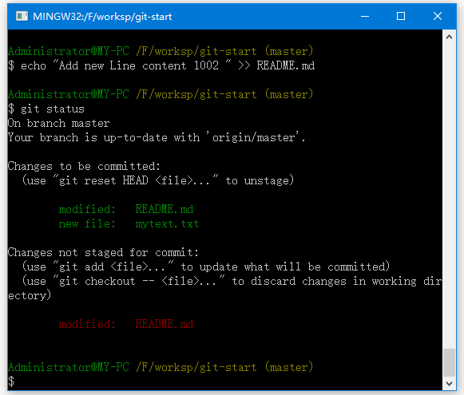
怎么回事？ 现在 README.md 文件同时出现在暂存区和非暂存区。 这怎么可能呢？ 好吧，实际上 Git 只不过暂存了运行 git add 命令时的版本， 如果现在提交，README.md 的版本是最后一次运行 git add 命令时的那个版本，而不是运行 git commit 时，在工作目录中的当前版本。 所以，运行了 git add 之后又作了修订的文件，需要重新运行 git add 把最新版本重新暂存起来：
$ git add README.md
Administrator@MY-PC /F/worksp/git-start (master)
$ git status
warning: LF will be replaced by CRLF in README.md.
The file will have its original line endings in your working directory.
On branch master
Your branch is up-to-date with 'origin/master'.
Changes to be committed:
(use "git reset HEAD <file>..." to unstage)
modified: README.md
new file: mytext.txt
Administrator@MY-PC /F/worksp/git-start (master)
$
3.5 状态简览
git status 命令的输出十分详细，但其用语有些繁琐。 如果你使用 git status -s 命令或 git status --short 命令，将得到一种更为紧凑的格式输出。 运行 git status -s，状态报告输出如下：
$ git status -s
M README.md
MM Rakefile
A lib/git.rb
M lib/simplegit.rb
?? LICENSE.txt
新添加的未跟踪文件前面有 ?? 标记，新添加到暂存区中的文件前面有 A 标记，修改过的文件前面有 M 标记。 你可能注意到了 M 有两个可以出现的位置，出现在右边的 M 表示该文件被修改了但是还没放入暂存区，出现在靠左边的 M 表示该文件被修改了并放入了暂存区。 例如，上面的状态报告显示： README 文件在工作区被修改了但是还没有将修改后的文件放入暂存区,lib/simplegit.rb 文件被修改了并将修改后的文件放入了暂存区。 而 Rakefile 在工作区被修改并提交到暂存区后又在工作区中被修改了，所以在暂存区和工作区都有该文件被修改了的记录。
3.6 忽略文件
一般我们总会有些文件无需纳入 Git 的管理，也不希望它们总出现在未跟踪文件列表。 通常都是些自动生成的文件，比如日志文件，或者编译过程中创建的临时文件等。 在这种情况下，我们可以创建一个名为 .gitignore 的文件，列出要忽略的文件模式。 来看一个实际的例子：
$ cat .gitignore
*.[oa]
*~
第一行告诉 Git 忽略所有以 .o 或 .a 结尾的文件。一般这类对象文件和存档文件都是编译过程中出现的。 第二行告诉 Git 忽略所有以波浪符(~)结尾的文件，许多文本编辑软件(比如 Emacs)都用这样的文件名保存副本。 此外，你可能还需要忽略 log，tmp 或者 pid 目录，以及自动生成的文档等等。 要养成一开始就设置好 .gitignore 文件的习惯，以免将来误提交这类无用的文件。
文件 .gitignore 的格式规范如下：
- 所有空行或者以
＃开头的行都会被 Git 忽略。 - 可以使用标准的
glob模式匹配。 - 匹配模式可以以(
/)开头防止递归。 - 匹配模式可以以(
/)结尾指定目录。 - 要忽略指定模式以外的文件或目录，可以在模式前加上惊叹号(
!)取反。
所谓的 glob 模式是指 shell 所使用的简化了的正则表达式。 星号(*)匹配零个或多个任意字符；[abc]匹配任何一个列在方括号中的字符(这个例子要么匹配一个字符 a，要么匹配一个字符 b，要么匹配一个字符 c)；问号(?)只匹配一个任意字符；如果在方括号中使用短划线分隔两个字符，表示所有在这两个字符范围内的都可以匹配(比如 [0-9] 表示匹配所有 0 到 9 的数字)。 使用两个星号(*) 表示匹配任意中间目录，比如a/**/z 可以匹配 a/z, a/b/z 或 a/b/c/z等。
下面再看一个 .gitignore 文件的例子：
# no .a files
*.a
# but do track lib.a, even though you're ignoring .a files above
!lib.a
# only ignore the TODO file in the current directory, not subdir/TODO
/TODO
# ignore all files in the build/ directory
build/
# ignore doc/notes.txt, but not doc/server/arch.txt
doc/*.txt
# ignore all .pdf files in the doc/ directory
doc/**/*.pdf
提示：GitHub 有一个十分详细的针对数十种项目及编程语言的
.gitignore文件列表，你可以在 http://github.com/github/gitignore 找到它。
3.7 查看已暂存和未暂存的修改
如果 git status 命令的输出对于你来说过于模糊，你想知道具体修改了什么地方，可以用 git diff 命令。 稍后我们会详细介绍 git diff，可能通常会用它来回答这两个问题：当前做的哪些更新还没有暂存？ 有哪些更新已经暂存起来准备好了下次提交？ 尽管 git status 已经通过在相应栏下列出文件名的方式回答了这个问题，git diff 将通过文件补丁的格式显示具体哪些行发生了改变。
假如再次修改 README.md 文件后暂存，然后编辑 READ.md 文件并在文件的最后追加一行内容：”this is another line 1003“ 之后先不暂存， 运行 git status 命令将会看到：
$ echo "this is another line 1003 " >> README.md
$ git status
On branch master
Your branch is up-to-date with 'origin/master'.
Changes to be committed:
(use "git reset HEAD <file>..." to unstage)
modified: README.md
new file: mytext.txt
Changes not staged for commit:
(use "git add <file>..." to update what will be committed)
(use "git checkout -- <file>..." to discard changes in working directory)
modified: README.md
Administrator@MY-PC /F/worksp/git-start (master)
$
要查看尚未暂存的文件更新了哪些部分，不加参数直接输入 git diff：
$ git diff
diff --git a/README.md b/README.md
index ea161e2..6679481 100644
--- a/README.md
+++ b/README.md
@@ -1,2 +1,3 @@
Add new Line content 1001
Add new Line content 1002
+this is another line 1003
warning: LF will be replaced by CRLF in README.md.
The file will have its original line endings in your working directo(END)
执行上面命令，得到以下输出结果 -
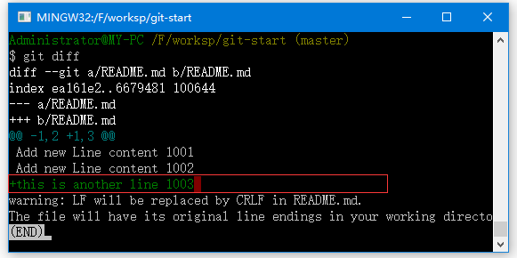
上面输出显示有加一行“+this is another line 1003”，前面带有一个加号：“+”。
请注意，git diff 本身只显示尚未暂存的改动，而不是自上次提交以来所做的所有改动。 所以有时候你一下子暂存了所有更新过的文件后，运行 git diff 后却什么也没有，就是这个原因。
然后用 git diff --cached 查看已经暂存起来的变化：(--staged 和 --cached 是同义词)
$ git diff --cached
diff --git a/README.md b/README.md
index 2f88ca7..ea161e2 100644
--- a/README.md
+++ b/README.md
@@ -1,2 +1,2 @@
-#git-start
-这是一个 Git 学习使用的Git仓库。
\ No newline at end of file
+Add new Line content 1001
+Add new Line content 1002
diff --git a/mytext.txt b/mytext.txt
new file mode 100644
index 0000000..1820ae1
--- /dev/null
+++ b/mytext.txt
@@ -0,0 +1 @@
+This is my first Git control file
warning: LF will be replaced by CRLF in mytext.txt.
The file will have its original line endings in your working directory.
Administrator@MY-PC /F/worksp/git-start (master)
$
执行上面命令，得到如下输出结果 -
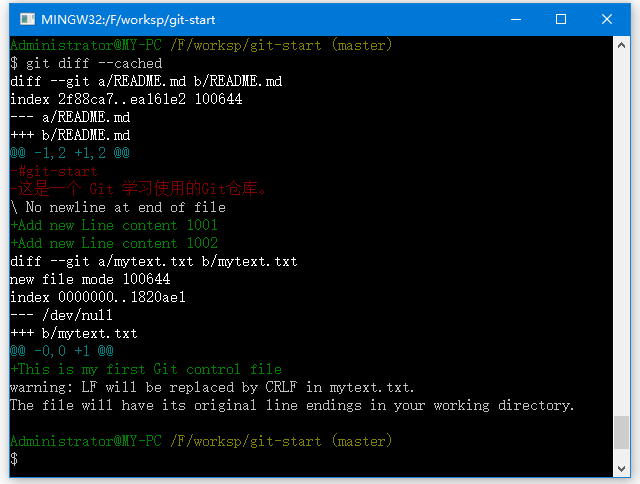
如上图中所示，分别对比了两个文件：README.md 和 mytext.txt，其中绿色的内容表示添加，红色的内容表示删除。
注意：
git diff的插件版本,在本教程中，我们使用git diff来分析文件差异。 但是，如果你喜欢通过图形化的方式或其它格式输出方式的话，可以使用git difftool命令来用Araxis，emerge或vimdiff等软件输出diff分析结果。 使用git difftool --tool-help命令来看你的系统支持哪些Git Diff插件。
3.8 提交更新
现在的暂存区域已经准备妥当可以提交了。 在此之前，请一定要确认还有什么修改过的或新建的文件还没有 git add 过，否则提交的时候不会记录这些还没暂存起来的变化。 这些修改过的文件只保留在本地磁盘。 所以，每次准备提交前，先用 git status 看下，是不是都已暂存起来了，如果没有暂存起来则要先使用命令：git add .将所有文件暂存起来， 然后再运行提交命令 git commit：
$ git status
$ git add .
$ git commit
这种方式会启动文本编辑器以便输入本次提交的说明。 (默认会启用 shell 的环境变量 $EDITOR 所指定的软件，一般都是 vim 或 emacs。使用 git config --global core.editor 命令设定你喜欢的编辑软件。)
编辑器会显示类似下面的文本信息(本例选用 Vim 的屏显方式展示)：
# Please enter the commit message for your changes. Lines starting
# with '#' will be ignored, and an empty message aborts the commit.
# On branch master
# Changes to be committed:
# new file: README
# modified: CONTRIBUTING.md
#
this is my commit info note.
~
~
".git/COMMIT_EDITMSG" 9L, 283C
可以看到，默认的提交消息包含最后一次运行 git status 的输出，放在注释行里，另外开头还有一空行，供你输入提交说明。完全可以去掉这些注释行，不过留着也没关系，多少能帮你回想起这次更新的内容有哪些。 (如果想要更详细的对修改了哪些内容的提示，可以用 -v 选项，这会将你所做的改变的 diff 输出放到编辑器中从而使你知道本次提交具体做了哪些修改。) 退出编辑器时，Git 会丢掉注释行，用输入提交附带信息生成一次提交。如上面示例中，提交的备注信息是：“this is my commit info note.”。
另外，也可以在 commit 命令后添加 -m 选项，将提交信息与命令放在同一行，如下所示：
$ git commit -m "this is my commit info note."
[master 463dc4f] Story 182: Fix benchmarks for speed
2 files changed, 2 insertions(+)
create mode 100644 README.md
现在已经创建了第一个提交！ 可以看到，提交后它会告诉你，当前是在哪个分支(master)提交的，本次提交的完整 SHA-1 校验和是什么(463dc4f)，以及在本次提交中，有多少文件修订过，多少行添加和删改过。
请记住，提交时记录的是放在暂存区域的快照。任何还未暂存的仍然保持已修改状态，可以在下次提交时纳入版本管理。 每一次运行提交操作，都是对你项目作一次快照，以后可以回到这个状态，或者进行比较。
3.9 跳过使用暂存区域
尽管使用暂存区域的方式可以精心准备要提交的细节，但有时候这么做略显繁琐。 Git 提供了一个跳过使用暂存区域的方式， 只要在提交的时候，给 git commit 加上 -a 选项，Git 就会自动把所有已经跟踪过的文件暂存起来一并提交，从而跳过 git add 步骤：
$ git status
On branch master
Changes not staged for commit:
(use "git add <file>..." to update what will be committed)
(use "git checkout -- <file>..." to discard changes in working directory)
modified: README.md
no changes added to commit (use "git add" and/or "git commit -a")
$ git commit -a -m 'added new benchmarks'
[master 83e38c7] added new benchmarks
1 file changed, 5 insertions(+), 0 deletions(-)
看到了吗？提交之前不再需要 git add 文件“README.md”了。
3.10 移除文件
要从 Git 中移除某个文件，就必须要从已跟踪文件清单中移除(确切地说，是从暂存区域移除)，然后提交。 可以用 git rm 命令完成此项工作，并连带从工作目录中删除指定的文件，这样以后就不会出现在未跟踪文件清单中了。
如果只是简单地从工作目录中手工删除文件，运行 git status 时就会在 “Changes not staged for commit” 部分(也就是 未暂存清单)看到：
$ rm mytext.txt
$ git status
On branch master
Your branch is ahead of 'origin/master' by 1 commit.
(use "git push" to publish your local commits)
Changes not staged for commit:
(use "git add/rm <file>..." to update what will be committed)
(use "git checkout -- <file>..." to discard changes in working directory)
deleted: mytext.txt
no changes added to commit (use "git add" and/or "git commit -a")
Administrator@MY-PC /F/worksp/git-start (master)
$
下一次提交时，该文件就不再纳入版本管理了。 如果删除之前修改过并且已经放到暂存区域的话，则必须要用强制删除选项 -f(注：即 force 的首字母)。 这是一种安全特性，用于防止误删还没有添加到快照的数据，这样的数据不能被 Git 恢复。
另外一种情况是，我们想把文件从 Git 仓库中删除(亦即从暂存区域移除)，但仍然希望保留在当前工作目录中。 换句话说，你想让文件保留在磁盘，但是并不想让 Git 继续跟踪。 当你忘记添加 .gitignore 文件，不小心把一个很大的日志文件或一堆 .a 这样的编译生成文件添加到暂存区时，这一做法尤其有用。 为达到这一目的，使用 --cached 选项：
$ git rm --cached mytext.txt
$ git status
On branch master
Your branch is ahead of 'origin/master' by 1 commit.
(use "git push" to publish your local commits)
Changes to be committed:
(use "git reset HEAD <file>..." to unstage)
deleted: mytext.txt
git rm 命令后面可以列出文件或者目录的名字，也可以使用 glob 模式。 比方说：
$ git rm log/\*.log
注意到星号 * 之前的反斜杠 \， 因为 Git 有它自己的文件模式扩展匹配方式，所以我们不用 shell 来帮忙展开。 此命令删除 log/ 目录下扩展名为 .log 的所有文件。 类似的比如：
$ git rm \*~
该命令为删除以 ~ 结尾的所有文件。
3.11 移动文件
不像其它的 VCS 系统，Git 并不显式跟踪文件移动操作。 如果在 Git 中重命名了某个文件，仓库中存储的元数据并不会体现出这是一次改名操作。 不过 Git 非常聪明，它会推断出究竟发生了什么，至于具体是如何做到的，我们稍后再谈。
既然如此，当你看到 Git 的 mv 命令时一定会困惑不已。 要在 Git 中对文件改名，可以这么做：
$ git mv file_from file_to
它会恰如预期般正常工作。 实际上，即便此时查看状态信息，也会明白无误地看到关于重命名操作的说明：
$ git mv README.md README
$ git status
On branch master
Changes to be committed:
(use "git reset HEAD <file>..." to unstage)
renamed: README.md -> README
其实，运行 git mv 就相当于运行了下面三条命令：
$ mv README.md README
$ git rm README.md
$ git add README
如此分开操作，Git 也会意识到这是一次改名，所以不管何种方式结果都一样。 两者唯一的区别是，mv 是一条命令而另一种方式需要三条命令，直接用 git mv 轻便得多。 不过有时候用其他工具批处理改名的话，要记得在提交前删除老的文件名，再添加新的文件名。
4 查看提交历史
在提交了若干更新，又或者克隆了某个项目之后，你也许想回顾下提交历史。 完成这个任务最简单而又有效的工具是 git log 命令。
接下来的例子会用我专门用于演示的 simplegit 项目， 运行下面的命令获取该项目源代码：
$ git clone http://github.com/yiibai/simplegit-progit
然后在此项目中运行 git log，应该会看到下面的输出：
$ git log
commit 0e72e2c0ab0c5bfbe34603e5fcca91a0b5c381ff
Author: your_name <your_email@mail.com>
Date: Thu Jul 6 23:49:46 2017 +0800
this is my comment
commit 85090b865d5cd7213e41a948e9f6f7466a950dbe
Author: Maxsu <769728683@qq.com>
Date: Thu Jul 6 17:34:41 2017 +0800
Initial commit
Administrator@MY-PC /F/worksp/git-start (master)
$
默认不用任何参数的话，git log 会按提交时间列出所有的更新，最近的更新排在最上面。 正如你所看到的，这个命令会列出每个提交的 SHA-1 校验和、作者的名字和电子邮件地址、提交时间以及提交说明。
git log 有许多选项可以帮助你搜寻你所要找的提交， 接下来我们介绍些最常用的。
一个常用的选项是 -p，用来显示每次提交的内容差异。 你也可以加上 -2 来仅显示最近两次提交：
$ git log -p -2
commit 0e72e2c0ab0c5bfbe34603e5fcca91a0b5c381ff
Author: your_name <your_email@mail.com>
Date: Thu Jul 6 23:49:46 2017 +0800
this is my comment
diff --git a/README.md b/README.md
index 2f88ca7..6679481 100644
--- a/README.md
+++ b/README.md
@@ -1,2 +1,3 @@
commit 0e72e2c0ab0c5bfbe34603e5fcca91a0b5c381ff
Author: your_name <your_email@mail.com>
Date: Thu Jul 6 23:49:46 2017 +0800
this is my comment
diff --git a/README.md b/README.md
index 2f88ca7..6679481 100644
--- a/README.md
+++ b/README.md
@@ -1,2 +1,3 @@
该选项除了显示基本信息之外，还附带了每次 commit 的变化。 当进行代码审查，或者快速浏览某个搭档提交的 commit 所带来的变化的时候，这个参数就非常有用了。 你也可以为 git log 附带一系列的总结性选项。 比如说，如果你想看到每次提交的简略的统计信息，可以使用 --stat 选项：
$ git log --stat
commit 0e72e2c0ab0c5bfbe34603e5fcca91a0b5c381ff
Author: your_name <your_email@mail.com>
Date: Thu Jul 6 23:49:46 2017 +0800
this is my comment
README.md | 5 +++--
mytext.txt | 1 +
2 files changed, 4 insertions(+), 2 deletions(-)
commit 85090b865d5cd7213e41a948e9f6f7466a950dbe
Author: Maxsu <769728683@qq.com>
Date: Thu Jul 6 17:34:41 2017 +0800
Initial commit
README.md | 2 ++
1 file changed, 2 insertions(+)
Administrator@MY-PC /F/worksp/git-start (master)
$
正如你所看到的，--stat 选项在每次提交的下面列出额所有被修改过的文件、有多少文件被修改了以及被修改过的文件的哪些行被移除或是添加了。 在每次提交的最后还有一个总结。
另外一个常用的选项是 --pretty。 这个选项可以指定使用不同于默认格式的方式展示提交历史。 这个选项有一些内建的子选项供你使用。 比如用 oneline 将每个提交放在一行显示，查看的提交数很大时非常有用。 另外还有 short，full 和 fuller 可以用，展示的信息或多或少有些不同，请自己动手实践一下看看效果如何。
$ git log --pretty=oneline
ca82a6dff817ec66f44342007202690a93763949 changed the version number
085bb3bcb608e1e8451d4b2432f8ecbe6306e7e7 removed unnecessary test
a11bef06a3f659402fe7563abf99ad00de2209e6 first commit
但最有意思的是 format，可以定制要显示的记录格式。 这样的输出对后期提取分析格外有用 — 因为你知道输出的格式不会随着 Git 的更新而发生改变：
$ git log --pretty=format:"%h - %an, %ar : %s"
ca82a6d - Scott Chacon, 6 years ago : changed the version number
085bb3b - Scott Chacon, 6 years ago : removed unnecessary test
a11bef0 - Scott Chacon, 6 years ago : first commit
git log --pretty=format 常用的选项 列出了常用的格式占位符写法及其代表的意义。
你一定感到奇怪 作者 和 提交者 之间究竟有何差别， 其实作者指的是实际作出修改的人，提交者指的是最后将此工作成果提交到仓库的人。 所以，当你为某个项目发布补丁，然后某个核心成员将你的补丁并入项目时，你就是作者，而那个核心成员就是提交者。 我们会在 分布式 Git 再详细介绍两者之间的细微差别。
当 oneline 或 format 与另一个 log 选项 --graph 结合使用时尤其有用。 这个选项添加了一些ASCII字符串来形象地展示你的分支、合并历史：
$ git log --pretty=format:"%h %s" --graph
* 2d3acf9 ignore errors from SIGCHLD on trap
* 5e3ee11 Merge branch 'master' of git://github.com/dustin/grit
|\
| * 420eac9 Added a method for getting the current branch.
* | 30e367c timeout code and tests
* | 5a09431 add timeout protection to grit
* | e1193f8 support for heads with slashes in them
|/
* d6016bc require time for xmlschema
* 11d191e Merge branch 'defunkt' into local
5 撤消操作
在任何一个阶段，你都有可能想要撤消某些操作。 这里，我们将会学习几个撤消你所做修改的基本工具。 注意，有些撤消操作是不可逆的。 这是在使用 Git 的过程中，会因为操作失误而导致之前的工作丢失的少有的几个地方之一。
有时候我们提交完了才发现漏掉了几个文件没有添加，或者提交信息写错了。 此时，可以运行带有 --amend 选项的提交命令尝试重新提交：
$ git commit --amend
这个命令会将暂存区中的文件提交。 如果自上次提交以来你还未做任何修改(例如，在上次提交后马上执行了此命令)，那么快照会保持不变，而你所修改的只是提交信息。
文本编辑器启动后，可以看到之前的提交信息。 编辑后保存会覆盖原来的提交信息。
例如，提交后发现忘记了暂存某些需要的修改，可以像下面这样操作：
$ git commit -m 'initial commit'
$ git add forgotten_file
$ git commit --amend
最终你只会有一个提交 - 第二次提交将代替第一次提交的结果。
5.1 取消暂存的文件
接下来的两个小节演示如何操作暂存区域与工作目录中已修改的文件。 这些命令在修改文件状态的同时，也会提示如何撤消操作。 例如，你已经修改了两个文件并且想要将它们作为两次独立的修改提交，但是却意外地输入了 git add * 暂存了它们两个。 如何只取消暂存两个中的一个呢？ git status 命令提示：
$ git add *
$ git status
On branch master
Your branch is ahead of 'origin/master' by 1 commit.
(use "git push" to publish your local commits)
Changes to be committed:
(use "git reset HEAD <file>..." to unstage)
renamed: README.md -> README
deleted: mytext.txt
在 “Changes to be committed” 文字正下方，提示使用 git reset HEAD <file>... 来取消暂存。 所以，我们可以这样来取消暂存 mytext.txt 文件：
$ git reset HEAD mytext.txt
$ git status
On branch master
Your branch is ahead of 'origin/master' by 1 commit.
(use "git push" to publish your local commits)
Changes to be committed:
(use "git reset HEAD <file>..." to unstage)
renamed: README.md -> README
Changes not staged for commit:
(use "git add/rm <file>..." to update what will be committed)
(use "git checkout -- <file>..." to discard changes in working directory)
deleted: mytext.txt
5.2 撤消对文件的修改
如果并不想保留对 mytext.txt 文件的修改怎么办？ 该如何方便地撤消修改 - 将它还原成上次提交时的样子(或者刚克隆完的样子，或者刚把它放入工作目录时的样子)？ 幸运的是，git status 也告诉了你应该如何做。 在最后一个例子中，未暂存区域是这样：
$ git status
On branch master
Your branch is ahead of 'origin/master' by 1 commit.
(use "git push" to publish your local commits)
Changes to be committed:
(use "git reset HEAD <file>..." to unstage)
renamed: README.md -> README
Changes not staged for commit:
(use "git add/rm <file>..." to update what will be committed)
(use "git checkout -- <file>..." to discard changes in working directory)
deleted: mytext.txt
它非常清楚地告诉了如何撤消之前所做的修改。让我们来按照提示执行：
$ git checkout -- mytext.txt
Administrator@MY-PC /F/worksp/git-start (master)
$ git status
On branch master
Your branch is ahead of 'origin/master' by 1 commit.
(use "git push" to publish your local commits)
Changes to be committed:
(use "git reset HEAD <file>..." to unstage)
renamed: README.md -> README
Administrator@MY-PC /F/worksp/git-start (master)
$ ls
README mytext.txt
可以看到，mytext.txt文件又回来了。
如果仍然想保留对那个文件做出的修改，但是现在仍然需要撤消，我们将会在 Git 分支介绍保存进度与分支；这些通常是更好的做法。
记住，在 Git 中任何已提交的东西几乎总是可以恢复的。甚至那些被删除的分支中的提交或使用 --amend 选项覆盖的提交也可以恢复。然而，任何你未提交的东西丢失后很可能再也找不到了。
6 程仓库的使用
前面所有讲解的内容都是一个人“自娱自乐”， Git这东西自己玩也没有多大意思，没有发挥出来Git最牛逼的地方。要使用Git在项目上多人协作那才有意思。
为了能在任意 Git 项目上协作，需要知道如何管理自己的远程仓库。远程仓库是指托管在因特网或其他网络中的你的项目的版本库。可以有好几个远程仓库，通常有些仓库对你只读，有些则可以读写。 与他人协作涉及管理远程仓库以及根据需要推送或拉取数据。 管理远程仓库包括了解如何添加远程仓库、移除无效的远程仓库、管理不同的远程分支并定义它们是否被跟踪等等。 在本节中，我们将介绍一部分远程管理的技能。
6.1 查看远程仓库
如果想查看你已经配置的远程仓库服务器，可以运行 git remote 命令。 它会列出你指定的每一个远程服务器的简写。 如果已经克隆了自己的仓库，那么至少应该能看到 origin - 这是 Git 给你克隆的仓库服务器的默认名字：
$ git clone http://git.oschina.net/yiibai/git-start.git
Cloning into 'ticgit'...
remote: Reusing existing pack: 1857, done.
remote: Total 157 (delta 0), reused 0 (delta 0)
Receiving objects: 100% (1857/1857), 74.35 KiB | 168.00 KiB/s, done.
Resolving deltas: 100% (772/772), done.
Checking connectivity... done.
$ cd git-start
$ git remote
origin
也可以指定选项 -v，会显示需要读写远程仓库使用的 Git 保存的简写与其对应的 URL。
$ git remote -v
origin http://git.oschina.net/yiibai/git-start.git (fetch)
origin http://git.oschina.net/yiibai/git-start.git (push)
如果远程仓库不止一个，该命令会将它们全部列出。 例如，与几个协作者合作的，拥有多个远程仓库的仓库看起来像下面这样：
$ cd git-start
$ git remote -v
mydoor http://git.oschina.net/yiibai/git-start.git (fetch)
mydoor http://git.oschina.net/yiibai/git-start.git (push)
curry http://git.oschina.net/yiibai/git-start.git (fetch)
curry http://git.oschina.net/yiibai/git-start.git (push)
deepfun http://git.oschina.net/yiibai/git-start.git (fetch)
deepfun http://git.oschina.net/yiibai/git-start.git (push)
koke http://git.oschina.net/yiibai/git-start.git (fetch)
koke http://git.oschina.net/yiibai/git-start.git (push)
这样可以轻松拉取其中任何一个用户的贡献。 此外，大概还会有某些远程仓库的推送权限，虽然目前还不会在此介绍。
6.2 添加远程仓库
我在之前的章节中已经提到并展示了如何添加远程仓库的示例，不过这里将演示如何明确地做到这一点。 运行 git remote add <shortname> <url> 添加一个新的远程 Git 仓库，同时指定一个可以轻松引用的简写：
$ git remote
origin
$ git remote add gs http://git.oschina.net/yiibai/git-start.git
$ git remote -v
gs http://git.oschina.net/yiibai/git-start.git (fetch)
gs http://git.oschina.net/yiibai/git-start.git (push)
origin http://git.oschina.net/yiibai/git-start.git (fetch)
origin http://git.oschina.net/yiibai/git-start.git (push)
现在你可以在命令行中使用字符串 gs 来代替整个 URL。 例如，如果想拉取仓库中有但你没有的信息，可以运行git fetch gs：
$ git fetch gs
From http://git.oschina.net/yiibai/git-start
* [new branch] master -> gs/master
现在 master 分支可以在本地通过 gs/master 访问到 - 可以将它合并到自己的某个分支中，或者如果你想要查看它的话，可以检出一个指向该点的本地分支。
6.2 从远程仓库中抓取与拉取
就如刚才所见，从远程仓库中获得数据，可以执行：
$ git fetch [remote-name]
这个命令会访问远程仓库，从中拉取所有还没有的数据。执行完成后，将会拥有那个远程仓库中所有分支的引用，可以随时合并或查看。
如果使用 clone 命令克隆了一个仓库，命令会自动将其添加为远程仓库并默认以 “origin” 为简写。 所以，git fetch origin 会抓取克隆(或上一次抓取)后新推送的所有工作。 必须注意 git fetch 命令会将数据拉取到本地仓库 - 它并不会自动合并或修改当前的工作。 当准备好时必须手动将其合并入你的工作区。
如果你有一个分支设置为跟踪一个远程分支，可以使用 git pull 命令来自动的抓取然后合并远程分支到当前分支。 这对你来说可能是一个更简单或更舒服的工作流程；默认情况下，git clone 命令会自动设置本地 master 分支跟踪克隆的远程仓库的 master 分支(或不管是什么名字的默认分支)。 运行 git pull 通常会从最初克隆的服务器上抓取数据并自动尝试合并到当前所在的分支。
6.3 推送到远程仓库
当想分享你的项目时，必须将其推送到上游。 这个命令很简单：git push [remote-name] [branch-name]。 当你想要将 master 分支推送到 origin 服务器时(再次说明，克隆时通常会自动帮你设置好那两个名字)，那么运行这个命令就可以将所做的备份到服务器：
$ git push origin master
只有当你有所克隆服务器的写入权限，并且之前没有人推送过时，这条命令才能生效。 当你和其他人在同一时间克隆，他们先推送到上游然后你再推送到上游，你的推送就会毫无疑问地被拒绝。 你必须先将他们的工作拉取下来并将其合并进你的工作后才能推送。
现在我们要把前所有添加和修改的内容添加到远程仓库，以便其协同的开发人员也可以获取到我们提交的内容。执行以下命令时，会要求我们输入在 http://git.oschina.net/ 注册的用户名和密码。
$ git push origin master
执行过程如下图中所示 -
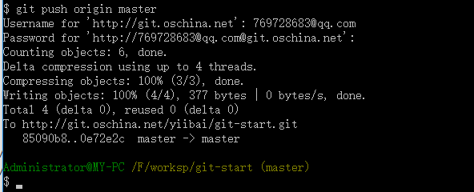
现在登录 http://git.oschina.net/ 查看提交是成功(与本地电脑上的内容是否一致)，如下所示 -
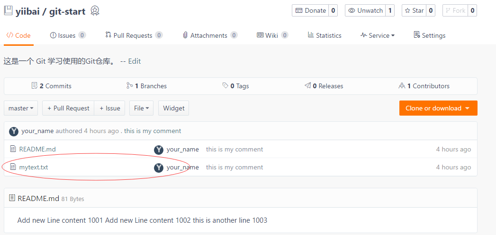
此时文件：http://git.oschina.net/yiibai/git-start/blob/master/mytext.txt 的内容应该与 F:\worksp\git-start\mytext.txt 的内容完全一样。
6.4 查看远程仓库
如果想要查看某一个远程仓库的更多信息，可以使用 git remote show [remote-name] 命令。 如果想以一个特定的缩写名运行这个命令，例如 origin，会得到像下面类似的信息：
$ git remote show origin
* remote origin
Fetch URL: http://git.oschina.net/yiibai/git-start.git
Push URL: http://git.oschina.net/yiibai/git-start.git
HEAD branch: master
Remote branch:
master tracked
Local branch configured for 'git pull':
master merges with remote master
Local ref configured for 'git push':
master pushes to master (fast-forwardable)
它同样会列出远程仓库的 URL 与跟踪分支的信息。 这些信息非常有用，它告诉你正处于 master 分支，并且如果运行 git pull，就会抓取所有的远程引用，然后将远程 master 分支合并到本地 master 分支。 它也会列出拉取到的所有远程引用。
这是一个经常遇到的简单例子。 如果你是 Git 的重度使用者，那么还可以通过 git remote show 看到更多的信息。
$ git remote show origin
* remote origin
Fetch URL: http://git.oschina.net/yiibai/git-start.git
Push URL: http://git.oschina.net/yiibai/git-start.git
HEAD branch: master
Remote branch:
master tracked
Local branch configured for 'git pull':
master merges with remote master
Local ref configured for 'git push':
master pushes to master (fast-forwardable)
这个命令列出了当你在特定的分支上执行 git push 会自动地推送到哪一个远程分支。 它也同样地列出了哪些远程分支不在你的本地，哪些远程分支已经从服务器上移除了，还有当你执行 git pull 时哪些分支会自动合并。
6.5 远程仓库的移除与重命名
如果想要重命名引用的名字可以运行 git remote rename 去修改一个远程仓库的简写名。 例如，想要将 gs 重命名为 newgs，可以用 git remote rename 这样做：
$ git remote rename gs newgs
$ git remote
origin
newgs
值得注意的是这同样也会修改你的远程分支名字。 那些过去引用 gs/master 的现在会引用 newgs/master。
如果因为一些原因想要移除一个远程仓库 - 你已经从服务器上搬走了或不再想使用某一个特定的镜像了，又或者某一个贡献者不再贡献了 - 可以使用 git remote rm ：
$ git remote rm newgs
$ git remote
origin
注：先写到这里，以后适当补充。
易百教程移动端：请扫描本页面底部(右侧)二维码并关注微信公众号，回复："教程" 选择相关教程阅读或直接访问：http://m.yiibai.com 。
加QQ群啦，易百教程官方技术学习群
注意：建议每个人选自己的技术方向加群，同一个QQ最多限加 3 个群。
- Java技术群： 227270512 （人数：3000，免费：否）
- Go开发者群（新）： 851549018 （人数：1000，免费）
- PHP开发者群： 460153241 （人数：2000，免费）
- MySQL/SQL群： 418407075 （人数：2000，免费：否）
- 大数据开发群： 655154550 （人数：2000，免费：否）
- Python技术群： 287904175 （人数：2000，免费：否）
- 人工智能深度学习： 456236082 （人数：2000，免费：否）
- 测试工程师群： 415553199 （人数：2000，免费：否）
- 前端开发者群： 410430016 （人数：2000，免费：否）
- C/C++技术群(新)： 629264796 （人数：2000，免费）
- Node.js技术群(新)： 621549808 （人数：2000，免费）
- PostgreSQL数据库群： 539504187 （人数：1000，免费）
- Linux运维技术群： 479429477 （人数：2000，免费：否）
- Oracle数据库： 175248146 （人数：2000，免费：否）
- C#/ASP.Net开发者： 579821706 （人数：2000，免费）
- 数据分析师群： 397883996 （人数：2000，免费：否）